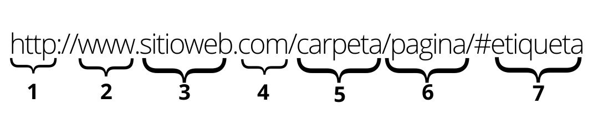

Contacto
- Número de teléfono: +52 7291242100
- Correo eléctrico: A01712119@tec.mx
- Github: DongjuMun
Introducción
Hola, soy Dongju Mun. Estoy en el 4to semestre en ITESM campus Querétaro. Estudio ITC(Ingeniería en Tecnologías Computacionales).
Preguntas
¿Cuál es la diferencia entre Internet y la World Wide Web?Internet es una inmensa red de computadoras alrededor de todo el mundo conectadas entre sí. En cambio, la web (la World Wide Web) es una enorme colección de páginas (html + http + URL) que se asienta sobre esa red de computadoras. Así que cuando navegas a través de tu celular o computadora usas internet para acceder a la web.
¿Cuáles son las partes de un URL?
Las partes de una URL son:
- Protocolo (HTTP (Hypertext Transfer Protocol))
- Subdominio («www» (World Wide Web))
- Dominio
- TLD (La extensión del dominio, también conocido como terminación o TLD (Top Level Domains))
- ccTLD: Dominios de nivel superior de código de país (Country Code Top Level Domains)
- -gTLD: Dominios de nivel superior genérico (Generic Top Level Domains)
- Carpeta o subcarpeta
- Página o ruta
- Etiqueta
El protocolo de comunicación que permite la transferencia de información en Internet. Gracias a este protocolo existe una comunicación entre el Cliente (que solicita información mediante el navegador web) y el Servidor. HTTPS es la versión segura para la transferencia de datos. Entre el protocolo y el subdominio (si tiene) se encuentran dos puntos y dos barras “://” que sirven para separarlos.
Por lo general, se encuentra «www» (World Wide Web) u otras variantes como un anexo del dominio principal pero es opcional. Son útiles porque evitan que se adquiera un dominio web adicional con el objetivo de crear divisiones dentro del sitio (Site owners primarily use subdomains to manage extensive sections that require their own content hierarchy, such as online stores, blogs, job boards or support platforms.). Se puede crear un subdominio que efectivamente apunte a un directorio específico en el servidor. Esto puede ser muy útil para contenidos web que deben mantenerse separados del sitio principal, por ejemplo, Facebook utiliza developers.facebook.com para proporcionar información específica a desarrolladores que quieran usar la API de Facebook.
Hace referencia al nombre único que identifica a un sitio web. Gracias a los nombres de dominio, no tenemos que utilizar direcciones IP para acceder a cada uno de los recursos de Internet. Se pueden utilizar números, letras, guiones (entre letras o números y nunca al principio o al final del nombre), no se permiten espacios entre las letras ni ciertos caracteres. Antes era física (Before the Domain Name System, you would access different addresses on computer networks through a host's numerical address. Each computer on the network could access files from the host by using these numerical addresses.) The Domain Name System process had to be introduced due to the complexity of how the Internet was operating prior to. Remembering numerical addresses would certainly have made scaling and public access difficult! The Domain Name System was introduced on ARPANET, a project under the U.S. Advanced Research Projects Agency.
Es la parte final de una dirección web e indica la naturaleza del dominio. La lista oficial de TLDs se mantiene por una organización llamada IANA, por sus siglas en inglés. IANA señala que la lista de TLDs también incluye ccTLD y gTLD.
Usan solo dos letras y se basan en códigos internacionales de países como .es para España, .jp para Japón, .mx para México. A menudo son utilizados por empresas que están creando sitios dedicados para regiones específicas.
Un gTLD es esencialmente un TLD que no depende de un código de país. Se caracterizan por tener 3 o más letras en la terminación y se crearon pensando para un tipo particular de empresas u organizaciones, como .edu que está dirigido a instituciones educativas. Otros ejemplos de gTLD incluyen .mil (militar), .gov (gobierno), .org (para organizaciones sin fines de lucro y otras organizaciones) y .net, que originalmente fue diseñado para proveedores de servicios de Internet (ISPs) pero que ahora tiene un uso mucho más amplio. Dicho esto, no siempre es necesario que se cumpla algún criterio específico para registrar un gTLD, motivo por el cual .com no sólo se utiliza con fines comerciales.
La carpeta o subcarpeta se utiliza para organizar la estructura de una página web, indica que dentro de la misma existe alguna página o archivo. Por ejemplo, en un sitio web se ha colocado un archivo en el siguiente enlace https://www.adaptixnetworks.com/downloads/wholesale_gold_mxn.csv, el cual indica que en la carpeta downloads se encuentra wholesale_gold_mxn.csv.
La página o ruta hace referencia a un archivo del sitio web. En las páginas se carga toda la información que encontramos dentro de un sitio. Por ejemplo, en https://www.adaptixnetworks.com/hospedaje/dominios la página es “dominios“.
La etiqueta es una referencia interna al contenido de una página. Por ejemplo, https://www.adaptixnetworks.com/voz-sobre-ip/telefonia-ip/#tarifas. La etiqueta es “#tarifas” y hace referencia a un contenido específico de la página “telefonia-ip” dentro del directorio “voz-sobre-ip”.
The Anatomy of an HTTP Request
An HTTP request must have the following:
- An HTTP method (like GET)
- A host URL (like https://api.spotify.com/)
- An endpoint path(like v1/artists/{id}/related-artists)
- Body
- Headers
- Query strings
- HTTP version
A response must have the following:
- Protocol version (like HTTP/1.1)
- Status code (like 200)
- Status text (OK)
- Headers
- Body
- GET
- Parameters for GET requests are typically passed as a query string, separated by the "&" symbol, for example: https://api.example.com/users?id=123&name=John.
- GET requests have limitations on the length of the URL and parameters; an excessively long URL may be rejected or truncated by the server.
- GET request parameters can be cached, so they are not suitable for transmitting sensitive information.
- GET request parameters can be recorded in the server's access logs, so they are not suitable for transmitting sensitive information.
- HEAD
- The size of a resource on the server.
- If a resource exists on the server or not.
- The last-modified date of a resource.
- Validity of a cached resource on the server.
- POST
- PUT
- PATCH
- DELETE
GET is an HTTP method used for read/retrieving data. GET requests typically pass parameters in the form of a query string, and the response returns the result in the entity-body to the client. A successful GET returns a response containing the information you requested. Parameters for GET requests are usually passed in the URL, and they can be appended to the end of the URL in the form of a query string. For example, you can use a GET request to obtain information about a specific user: https://api.example.com/users?id=123. The server will return the corresponding user information based on the parameter's value.
When using GET requests, consider the following points:
The HTTP HEAD method simply returns metadata about a resource on the server. This HTTP request method returns all of the headers associated with a resource at a given URL, but does not actually return the resource.
The HTTP HEAD method is commonly used to check the following conditions:
A HEAD request is useful for checking what a GET request will return before actually making a GET request - a HEAD request can read the Content-Length header to check the size of the file, without actually downloading the file.
POST Method is a commonly used HTTP method for sending data to an API. Unlike the PUT and DELETE methods, POST is typically used to create new resources and does not require the client to provide a complete representation of the resource. A POST request requires a body in which you define the data of the entity to be created.
Compared to the PUT method, POST is generally used for creating new resources, while PUT is used for updating existing resources. PUT requires the client to provide a complete representation of the resource, while POST does not have this requirement. A successful POST request would be a 200 response code.
Additionally, PUT is usually idempotent, meaning that multiple identical PUT requests will produce the same result, while POST may not be idempotent.
The PUT method is used to update or replace an existing resource on the server. It requires the client to send the complete representation of the resource to be updated.
This means that if a property is not included in the request, it will be removed from the resource on the server. If there is no resource that matches the request, it will create a new resource. PUT is idempotent, meaning that multiple identical requests will have the same effect as a single request.
The PATCH method is used to partially update an existing resource on the server. Unlike the PUT method, which requires sending the complete representation of the resource, PATCH only requires sending the changes that need to be made. This can be useful when updating specific properties of a resource without affecting the rest of the resource's properties. PATCH is also idempotent.
The DELETE method is an HTTP method used to remove or delete a resource from a server. It is commonly used to instruct the server to delete a specific resource identified by the provided URL or resource identifier. Unlike other HTTP methods like GET and POST, which retrieve or create resources, the DELETE method is specifically designed for resource deletion.
When a client sends a DELETE request to the server, it indicates that the client wants to remove the resource permanently. However, the server's response to a DELETE request may vary depending on the server's implementation. Some servers may return a successful response (e.g., status code 200) to confirm the deletion, while others may respond with a status code indicating that the resource was not found or cannot be deleted.
POST es mas seguro que GET. HEAD es como GET pero sin body.
¿Qué método HTTP se debe utilizar al enviar un formulario HTML, por ejemplo cuando ingresas tu usuario y contraseña en algún sitio? ¿Por qué?POST
- Los datos enviados mediante el método POST no se incluyen en la URL, como ocurre con el método GET. Esto evita que las credenciales aparezcan en el historial del navegador, en los registros del servidor (logs), o sean visibles en la barra de direcciones del navegador.
- POST permite enviar datos en el cuerpo de la solicitud (request body), lo que facilita el envío de formularios más complejos o con muchos campos. En contraste, GET tiene limitaciones en la longitud de la URL.
- Según el estándar HTTP, POST se utiliza para realizar operaciones que implican el envío de datos al servidor, como autenticación o procesamiento de formularios. Esto encaja mejor con la acción de enviar un formulario de inicio de sesión.
- Las solicitudes POST no suelen ser almacenadas en caché por los navegadores, lo que protege datos sensibles de ser accidentalmente recuperados.
GET
- GET se utiliza para solicitar recursos desde el servidor, como documentos HTML, imágenes, hojas de estilo (CSS) o scripts (JavaScript). El servidor responde enviando el recurso solicitado.
- Las solicitudes GET son idempotentes, lo que significa que hacer la misma solicitud varias veces no debería cambiar el estado del servidor. Por eso es ideal para recuperar información.
- Las respuestas de las solicitudes GET suelen almacenarse en caché por los navegadores para optimizar el rendimiento al acceder a recursos que no cambian frecuentemente.
Cuando un servidor web devuelve una respuesta HTTP con el código 200, significa que la solicitud se procesó correctamente y el servidor devolvió el recurso solicitado. No ocurrió ningún error
¿Es responsabilidad del desarrollador corregir un sitio web si un usuario reporta que intentó acceder al sitio y se encontró con un error 404? ¿Por qué?Sí, es responsabilidad del desarrollador corregir un sitio web si un usuario reporta que encontró un error 404 (Not Found) al intentar acceder.
Este error ocurre cuando el servidor no puede encontrar el recurso solicitado por el cliente. Esto suele deberse a problemas como un enlace roto o incorrecto, la eliminación o el cambio de ubicación de un recurso sin redireccionamiento, o un error en la configuración del servidor o del sitio web
A véces, por el tema de seguridad, intencionalmente los desarrolladores ponen este error para que no intenten continuamente para aceder a alguna información sensitiva.
¿Es responsabilidad del desarrollador corregir un sitio web si un usuario reporta que intentó acceder al sitio y se encontró con un error 500? ¿Por qué?Sí. Este código de estado HTTP significa que el servidor encontró una condición inesperada que le impidió cumplir con la solicitud (Internal Server Error). Generalmente, esto está relacionado con fallos en el código backend (como scripts mal escritos), configuración incorrecta del servidor (por ejemplo, un error en el archivo ".htaccess" o en los permisos de archivos), o problemas en la conexión con bases de datos.
¿Qué significa que un atributo HTML5 esté depreciado o desaprobado (deprecated)? Menciona algunos elementos de HTML 4 que en HTML5 estén desaprobados.Cuando se dice que un atributo o elemento HTML está depreciado o desaprobado significa que, aunque todavía puede ser reconocido por los navegadores y funcionar en algunas circunstancias, ya no se recomienda su uso porque se considera obsoleto o innecesario en versiones más recientes del estándar, existen alternativas más modernas o eficientes para lograr la misma funcionalidad, y podría no ser compatible con navegadores en el futuro, ya que los desarrolladores del estándar eventualmente eliminarán el soporte para esos elementos o atributos.
Hay algunos ejemplos de elementos de HTML 4 que están desaprobados en HTML5:
- font
- center
- frame y frameset
Usado para definir el tamaño, color y tipo de fuente del
texto.
Alternativa: Usa CSS (font-family, color,
font-size, etc.).
Usado para centrar texto o elementos.
Alternativa: Usa CSS (text-align: center; o margin:
auto;).
Usados para crear páginas divididas en marcos.
Alternativa: Usa iframe o técnicas modernas de diseño como
CSS Grid o Flexbox.
HTML5 es una actualización importante de HTML4 que introduce mejoras significativas, moderniza la estructura del lenguaje y ofrece nuevas funcionalidades para adaptarse a las necesidades de las aplicaciones web modernas.
- HTML5 introduce elementos que permiten estructurar mejor las páginas web de manera semántica. Esto mejora la accesibilidad, el SEO y la claridad del código.
- HTML5 incorpora elementos nativos para manejar audio y video sin necesidad de complementos externos (como Flash)
- HTML5 incluye soporte para una amplia gama de APIs que facilitan el desarrollo de aplicaciones web dinámicas y modernas
- HTML5 amplía las capacidades de los formularios, haciendo que la validación y el diseño sean más sencillos.
ex) div & span (HTML4) vs header, nav, article, section, footer ... (HTML5)
ex) plugins externos como Flash o QuickTime (HTML4) vs audio, video (HTML5)
ex) Validación de formularios limitada y dependiente de JavaScript (HTML4) vs Nuevos tipos de entrada (input): email, date, time, url, number, range, etc. y nuevos atributos: placeholder, required, pattern, etc.
Una tabla en HTML tiene varios componentes de estructUna tabla en HTML tiene varios componentes de estructura y elementos de estilo que permiten organizar y presentar datos de forma clara y ordenada.
- Componentes de Estructura (Etiquetas HTML)
- table: Etiqueta principal que define el inicio y el fin de la tabla.
- thead: Contenedor opcional para agrupar las filas del encabezado de la tabla.
- tbody: Contenedor opcional para agrupar las filas del cuerpo principal de la tabla.
- tfoot: Contenedor opcional para agrupar las filas del pie de tabla (generalmente usado para totales o información adicional).
- tr (Table Row): Define una fila en la tabla.
- th (Table Header): Define una celda de encabezado, que generalmente aparece en negritas y centrada de forma predeterminada.
- td (Table Data): Define una celda de datos dentro de la tabla.
Ejemplo:
| Nombre | Edad |
|---|---|
| Ana | 25 |
| Carlos | 30 |
- Componentes de Estilo (Atributos y CSS)
- border: Define el grosor del borde (en HTML antiguo, aunque se recomienda usar CSS).
- cellpadding: Define el espacio interno dentro de cada celda.
- cellspacing: Define el espacio entre las celdas (ya obsoleto, ahora se usa CSS).
- align: Define la alineación horizontal (obsoleto, se usa CSS ahora).
- width y height: Controlan el tamaño de la tabla y sus elementos (también mejor con CSS).
Ejemplo:
| Producto | Precio |
|---|---|
| Manzanas | $1.50 |
| Plátanos | $0.75 |
Form controls include input fields, checkboxes, radio buttons, select boxes, textareas, and buttons. They are used to create forms on web pages, which allow users to submit data to servers. Form controls have various attributes that can be used to customize their behavior, such as the type of input allowed, the default value, and the validation rules. These attributes can be set using HTML or JavaScript. Form controls are a critical part of web development, as they enable users to interact with web pages and provide data that can be used by web servers to process requests and generate responses.
- Date and Time Pickers
- Range Sliders
- Color Pickers
- File uploads
Date and Time Pickers are advanced form controls in HTML that allow users to select dates and times easily. They provide a user-friendly interface that displays a calendar for selecting dates and a clock for selecting times. Date and Time Pickers are commonly used in forms that require users to enter date and time information, such as appointment booking forms, event registration forms, and time tracking forms.
Range sliders are advanced form controls in HTML5 that allow users to select a value within a specified range. They are typically used in forms that require users to select a value from a range of values, such as volume controls, brightness controls, or temperature controls. Range sliders provide a visual representation of the range of values and allow users to select a value by dragging a handle along the slider track.
Color Pickers are advanced form controls in HTML5 that allow users to select a color from a range of colors. They are commonly used in forms that require users to select a color, such as in graphic design applications, color customization features, or theme selection forms.
File uploads are advanced form controls in HTML5 that allow users to select and upload files from their local computer or device. They are commonly used in forms that require users to upload files, such as in job application forms, online document submission forms, or photo and video sharing applications.
Autocomplete is an advanced form control in HTML5 that provides suggestions to users as they type in an input field. It is commonly used in forms that require users to enter text, such as in search bars, address forms, or email address fields.
fieldset and legend elements are HTML tags used to group related form elements and provide a title or caption for the group. They are used to improve the accessibility and usability of web forms by organizing form controls into logical sections and providing context for the user.
The fieldset element is used to group related form controls together. It is commonly used to group radio buttons, checkboxes, and input fields that are related to a specific topic or section of a form. For example, a form that collects personal information may have a fieldset element to group together fields related to name, address, and contact information.
The legend element is used to provide a caption or title for a fieldset element. It is typically placed as the first child element within the fieldset element. The text provided within the legend element is displayed as the title or caption for the group of form controls.
¿Qué tanto soporte HTML5 tiene el navegador que utilizas? Puedes utilizar la siguiente página para descubrirlo: http://html5test.com/ (Al responder la pregunta recuerda poner el navegador que utilizas)El navegador que utilizo es google chrome. Para hacer el test, utlice el siguiente recurso: https://html5test.opensuse.org/ Según el recurso, google chrome tiene 538 puntos de 571 puntos.
¿Cuál es el ciclo de vida de los sistemas de información?Planificación -> Análisis -> Diseño -> Implementación -> Pruebas -> Instalación o despliegue -> Uso y mantenimiento
- Planificación
- Análisis
- Diseño
- Implementación
- Pruebas
- Instalación o despliegue
- Uso y mantenimiento
- Eliminar los defectos que se detecten durante su vida útil, lo primero que a uno se le viene a la cabeza cuando piensa en el mantenimiento de cualquier cosa.
- Adaptarlo a nuevas necesidades cuando el sistema ha de funcionar sobre una nueva versión del sistema operativo o en un entorno hardware diferente.
- Añadirle nueva funcionalidad, cuando se proponen características deseables que supondrían una mejora del sistema ya existente.
Realizar una serie de tareas previas que influirán decisivamente en la finalización con éxito del proyecto.
Averiguar qué es exactamente lo que tiene que hacer el sistema. La etapa de análisis en el ciclo de vida del software corresponde al proceso mediante el cual se intenta descubrir qué es lo que realmente se necesita y se llega a una comprensión adecuada de los requerimientos del sistema.
Se han de estudiar posibles alternativas de implementación para el sistema de información que hemos de construir y se ha de decidir la estructura general que tendrá el sistema (su diseño arquitectónico). El diseño de un sistema es complejo y el proceso de diseño ha de realizarse de forma iterativa.
Seleccionar las herramientas adecuadas, un entorno de desarrollo que facilite nuestro trabajo y un lenguaje de programación apropiado para el tipo de sistema que vayamos a construir. La elección de estas herramientas dependerá en gran parte de las decisiones de diseño que hayamos tomado hasta el momento y del entorno en el que nuestro sistema deberá funcionar.
Tiene como objetivo detectar los errores que se hayan podido cometer en las etapas anteriores del proyecto (y, eventualmente, corregirlos). La búsqueda de errores que se realiza en la etapa de pruebas puede adaptar distintas formas, en función del contexto y de la fase del proyecto.
Debemos de planificar el entorno en el que el sistema debe funcionar, tanto hardware como software: equipos necesarios y su configuración física, redes de interconexión entre los equipos y de acceso a sistemas externos, sistemas operativos y bibliotecas. Estas etapas son un reflejo del proceso que se sigue a la hora de resolver cualquier tipo de problema.
La etapa de mantenimiento consume típicamente del 40 al 80 por ciento de los recursos de una empresa de desarrollo de software. De hecho, con un 60% de media, es probablemente la etapa más importante del ciclo de vida del software.
Planificación -> Análisis -> Diseño-> Implementación
- Planificacióna
- Análisis
- Diseño
- Implementación
Identificar el valor que el sistema proporciona al negocio. Analizar factibilidad: Técnica, Económica, y Organizacional. Desarrollar un plan de trabajo: Identificar tareas y estimación de esfuerzo y tiempo. Organizar personal para el proyecto. Dirigir y controlar el proyecto: refinar estimaciones, seguimiento de tareas, y coordinación
Análisis de requerimientos: Analizar problemas, Benchmarking, y Reingeniería de Procesos. Recopilar Información (entrevistas y cuestionarios). Modelamiento: Procesos y Datos
Plan de Diseño Físico. Diseño de arquitectura (hardware, red). Diseño de BD: formato de almacenamiento y optimización de almacenamiento. Diseño de Programas: diagramas de estructuray Especificaciones de programa
Construcción del sistema: Programación y Testeo. Instalación. Entrenamiento. Soporte
La regla importante en CSS se utiliza para agregar más importancia a una propiedad/valor de lo normal. De hecho, si uso la regla importante, anulará TODAS las reglas de estilo anteriores para esa propiedad específica en ese elemento.
El uso de !important en CSS debe ser limitado y reservado para casos excepcionales, como sobrescribir estilos de terceros o manejar situaciones críticas de producción, pero nunca como una solución habitual. Su abuso dificulta el mantenimiento del código y genera conflictos de especificidad, lo que puede complicar la colaboración en equipo. En su lugar, es preferible estructurar correctamente los estilos, usar selectores más específicos, organizar el CSS en cascada y, en proyectos modernos, optar por enfoques como CSS-in-JS, Tailwind o módulos CSS para mantener un control preciso de los estilos sin necesidad de recurrir a !important.
Si se pone una imagen de fondo en una página HTML, ¿por qué debe escogerse con cuidado?Elegir con cuidado una imagen de fondo en una página HTML es crucial porque afecta tanto la estética como la funcionalidad del diseño. Una imagen mal seleccionada puede dificultar la legibilidad del texto, sobrecargar visualmente la página o ralentizar su carga si el archivo es demasiado pesado. Además, debe ser relevante al contenido y estar optimizada para diferentes tamaños de pantalla y resoluciones para garantizar una experiencia de usuario accesible y profesional. También es importante considerar aspectos como el contraste, la calidad de compresión y su impacto en el rendimiento del sitio.
Como ingeniero de software, ¿cuál es tu recomendación al elegir las unidades de un propiedad de estilo entre %, px y pt?Al elegir unidades para propiedades de estilo en CSS, es importante considerar el contexto y la flexibilidad necesaria en el diseño.
- Usar % (porcentaje)
- Usar px (píxeles)
- Evitar pt (puntos)
- Recomendación general
Ideal para diseños fluidos y responsivos, ya que se basan en el tamaño relativo del contenedor padre. Úsalo para anchos, márgenes o paddings en layouts que necesitan ajustarse dinámicamente al tamaño de la pantalla.
Útil para elementos que requieren precisión absoluta, como bordes, íconos o imágenes. Sin embargo, evita abusar de píxeles para fuentes o tamaños generales, ya que no escalan bien en pantallas con resoluciones variables.
Aunque se usa en diseño impreso, no es recomendable para la web porque no se ajusta bien en dispositivos con diferentes resoluciones. En lugar de pt, utiliza em, rem, o incluso px para el control del tamaño de fuente.
Prefiere unidades relativas como %, em o rem para garantizar accesibilidad, diseño responsivo y una mejor experiencia en diferentes dispositivos. Reserva los px para elementos que requieran dimensiones exactas y evita pt para el desarrollo web.
El uso de una versión minimizada del CSS mejora el rendimiento del sitio porque elimina caracteres innecesarios como espacios, saltos de línea y comentarios, reduciendo significativamente el tamaño del archivo. Esto acelera el tiempo de carga de la página, ya que se transfiere menos información al navegador. Además, mejora el tiempo de procesamiento del CSS por parte del navegador y optimiza el uso del ancho de banda, lo cual es especialmente beneficioso para usuarios con conexiones lentas. En resumen, la minimización del CSS hace que el sitio sea más rápido, eficiente y amigable para los usuarios.